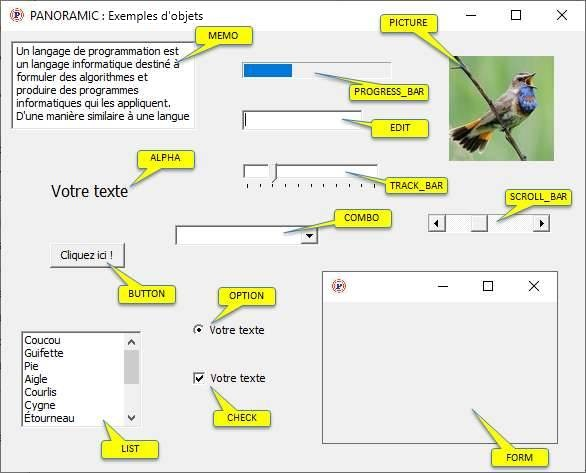

Créez vos applications Windows
en toute simplicité
PANORAMIC est un langage de programmation puissant, convivial et gratuit. Il utilise la syntaxe du célèbre langage BASIC pour mettre le développement à la portée de tous.
Qu'est-ce que PANORAMIC ?
PANORAMIC est un logiciel portable, utilisable directement depuis une clé USB sans aucune installation préalable.
Son champ d'activité est extrêmement vaste : objets système, lecture de sons et musiques, rendu d'images, films, dessins 2D, gestion de sprites pour jeux vidéo, mondes 3D avec caméras et lumières, fichiers texte, pilotage de feuilles Excel, et bien plus encore.
Il possède actuellement un catalogue impressionnant de plus de 740 instructions et permet la génération d'exécutables (EXE) pour distribuer vos créations de manière autonome.
Compatible Windows Moderne
Les versions freeware de PANORAMIC sont légères, sûres et entièrement fonctionnelles sur toutes les versions de Windows, de Windows XP à Windows 11.
Incroyablement facile à utiliser
Quelques lignes de BASIC suffisent pour donner vie à vos projets visuels ou 3D. Jugez par vous-même :
1. Créer un bouton
Seulement 2 lignes pour créer un bouton avec un texte explicatif :
button 1
caption 1, "Mon bouton"
2. Rendre un bouton cliquable
Seulement 3 lignes pour créer un bouton explicatif qui exécute un programme quand on clique dessus :
button 1
caption 1, "Mon bouton"
on_click 1, program3. Un monde 3D en 2 lignes
Créez instantanément un espace 3D avec une théière (teapot) modélisée :
scene3d 1
3d_teapot 1PANORAMIC peut gérer de nombreux objets système, par exemple :

Communication avec l'extérieur
PANORAMIC ne s'arrête pas au visuel. Il communique aisément avec les ports matériels (liaisons série USB, RS-232, ports parallèles) et permet d'importer et appeler n'importe quelle DLL Windows externe.
Cela en fait un outil fantastique pour piloter du matériel électronique, des capteurs, ou intégrer des API système avancées.
La Communauté PANORAMIC
Pour encourager l'apprentissage, découvrez les sites de passionnés et rejoignez notre forum officiel. Vous y trouverez des centaines d'exemples de code source, de l'aide pour vos projets et des échanges constructifs.